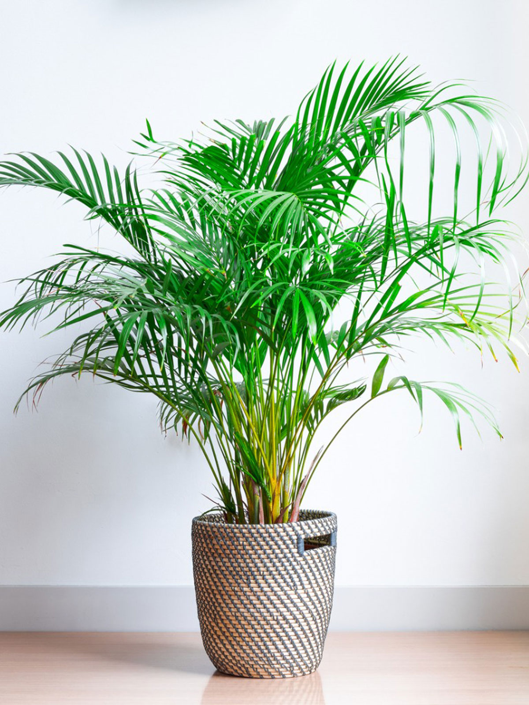
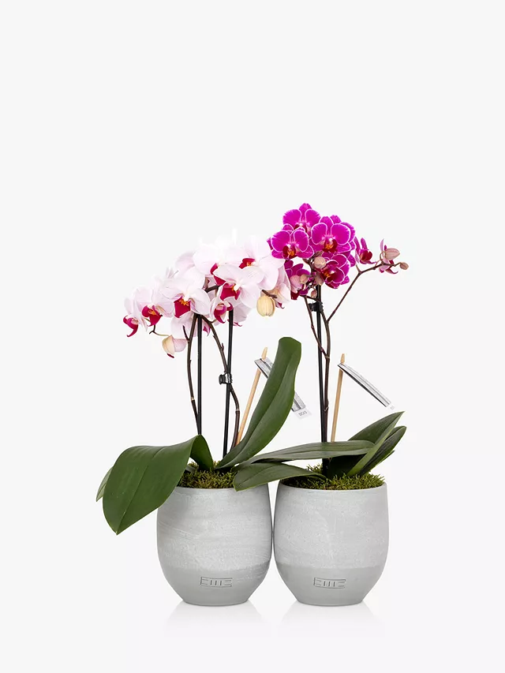

There are many different types of household plants that are for sale, and
while all home plants carry some benefits, some are more effective than others in specific areas such as
air filtration and some are much easier to take care of than others.
Where To Buy
To find out where to buy household plants for yourself, you can reference the map to check for the highlighted local garden centres.
Areca Plant
The areca palm plant has been measured as one of the best house
plants for filtration and is reasonanly low maintainance in comparison to many
other plants, so are suitable for those looking to start looking after their own plants.


Orchid Plant
If your main focus when choosing a household plant to purchase,
the orchid plant should a top choice for most as it's vibrant colours show off the flowers spectacularly in any environment, as well as requiring minimal upkeep